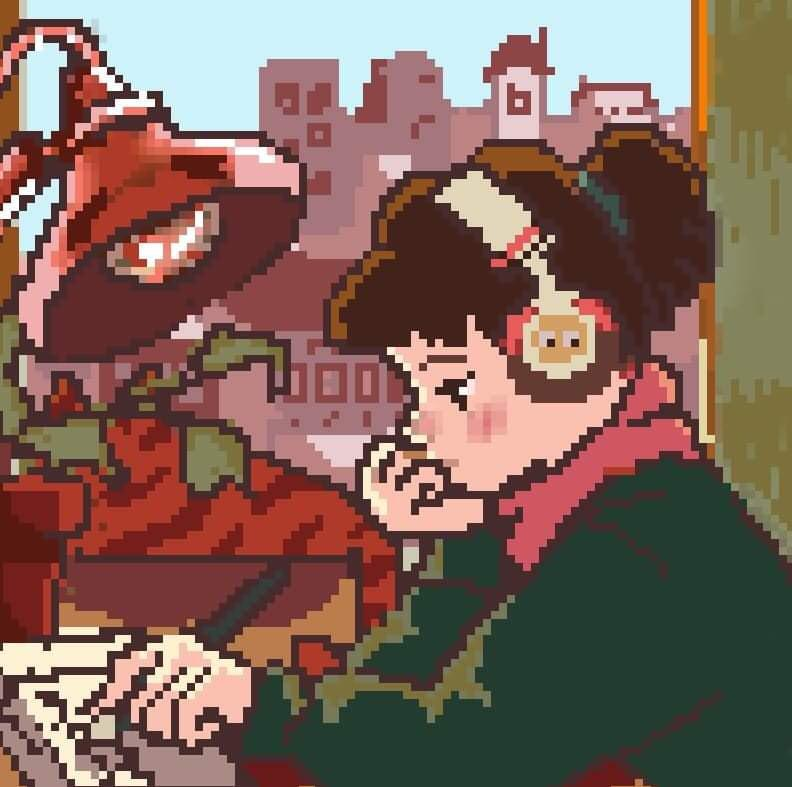
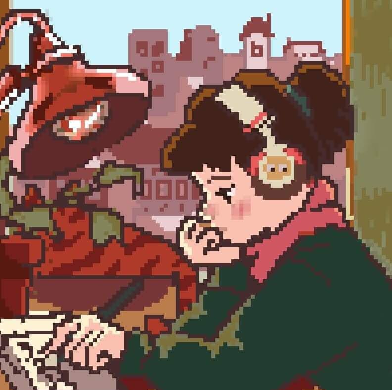

Boas Vindas
A última atualização dessas anotações foi no dia 08/02/2025.
Basta clicar na imagem abaixo (Dois cliques para celulares). Bons estudos!
A última atualização dessas anotações foi no dia 08/02/2025.
Basta clicar na imagem abaixo (Dois cliques para celulares). Bons estudos!
